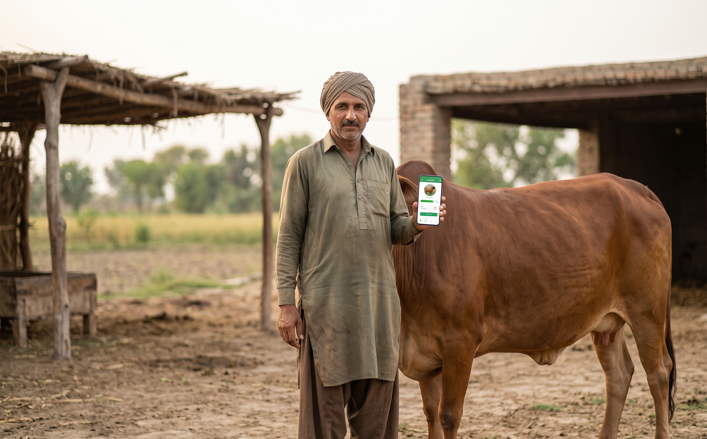

تصویر اور علامات کی مشترکہ جانچ
AI کی مدد سے دونوں معلومات کو ایک ساتھ سمجھنے کی ابتدائی کوشش۔
مویشیوں کی صحت، آسان زبان میں
جانور کی تصویر شامل کریں، علامات بتائیں، اور ممکنہ بیماری اور فوری توجہ کی ضرورت کے بارے میں آسان AI رہنمائی حاصل کریں۔
یہ ابتدائی رہنمائی ہے، حتمی تشخیص نہیں۔

سادہ طریقہ
جانور کا ریکارڈ بنانے سے لے کر صحت کی پچھلی تفصیل محفوظ رکھنے تک۔
نام، قسم اور بنیادی معلومات محفوظ کریں۔
صاف تصویر کے ساتھ جو علامات نظر آئیں وہ لکھیں۔
ممکنہ بیماری اور توجہ کی ضرورت سمجھیں۔
نتیجہ محفوظ کریں اور وقت کے ساتھ صحت دیکھیں۔
کسانوں کے لیے بنایا گیا
صرف ضروری مدد—تاکہ کسان جلد سمجھ سکے اور محفوظ قدم اٹھا سکے۔
AI کی مدد سے دونوں معلومات کو ایک ساتھ سمجھنے کی ابتدائی کوشش۔
فوری مدد کی ضرورت کو واضح انداز میں نمایاں کرنا۔
سادہ زبان جو موبائل پر پڑھنے اور سننے میں آسان ہو۔
صحت کی اہم معلومات منظم رکھنے کے لیے ایک واضح جگہ۔
ہیلتھ پاسپورٹ
مویشی محافظ ہر جانور کی صحت کی تفصیل منظم رکھتا ہے۔ مستقبل میں کسان ایک آسان ہیلتھ کارڈ اپنی مرضی سے خریدار کے ساتھ بھی شیئر کر سکے گا۔
یہ حصہ آئندہ ہیلتھ پاسپورٹ کے تصور کی نمائشی جھلک ہے۔
مویشی محافظ ابتدائی صحت جانچ اور آگاہی میں مدد دیتا ہے۔ نتائج ممکنہ بیماریوں کی نشاندہی کرتے ہیں اور جانوروں کے ماہر ڈاکٹر کا متبادل نہیں۔